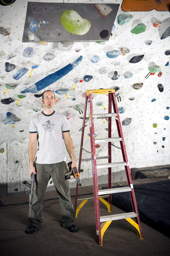

|
e-Grips Routesetting Interview: Kyle Musgrove 
eG: We first met when you came out to the 2005 SENDFEST to help out as a setter, and since then you’ve been at a couple big events with the USAC team – what are those comps like? KM: From a creative standpoint those comps are great. The setting and climbing are at such a high level it allows for the most creativity in the movement and design of a problem. Setting for those comps can be stressful or frustrating if your vision does not translate well to the wall. For a setter though, those comps are great. You are able to set at your limit and learn from the other setters as well. It is organized mayhem that all comes together in the end. Any setter should set for a national level event given the chance. eG: You set at the Southeast powerhouse gym Climb Nashville… and from what we hear that gym never has less than 100 people climbing. What makes it so great? KM: The people make it great. We have an awesome member base and on any day plenty of walk in newbies. As for there always being 100 people, the 2 month turnaround on routes keeps people coming a few times a week. eG: Did you begin setting at Climb Nashville, or beforehand? How long have you been at it? How did you learn? KM: I started setting at a small gym with about 30 topropes, 25 foot walls and a large bouldering area south of Nashville in 1998. I’ve been setting for 9 years and setting full time since I graduated college in may of 2004. I am basically self taught. The owner of that first gym I set at gave me a couple tips on what to do, but it was mostly trial and error setting. Since I had no mentor there were probably more errors when I was first setting, reachy moves, no feet, etc. I have always listened to what climbers have to say about my routes or boulder problems and that probably helped me the most as a beginner setter and is still helping me today. I have been setting for comps locally almost since I started setting and comps are great for learning, especially since it usually involves collaboration with other setters. At the Sendfests and ABS nats I learned a lot by seeing what is involved with higher level competitions. I will always be able to learn more about setting. eG: You’ve got some great Tennessee climbing areas nearby, as well as the Red River Gorge and Horse Pens 40 – do you get outside much and use these places as inspiration? KM: Yeah, not to mention little rock city and rocktown. The creative juices definitely flow more freely when I am going outside every weekend. I boulder mostly but a lot of times I find routes to be more inspiring for setting. eG: I’ve visited your gym, and it seems like as a routesetter, you have a great rapport with the community and people there are really interested in the routes, checking out what’s new, giving feedback. How do you build that kind of community as a setter? KM: Being around and setting for 9 years you just get to know people. Some of the guys that have been around since I started have witnessed my setting evolution. I get the “remember routes” frequently from them. Those are the ‘remember that route you set 2 years ago, can you set something like that again’ routes. I definitely used to spend way too much time at the gym; setting, climbing, socializing. Recently I have been trying to limit my non working time at the gym. I talk to members and friends, ask them what they think about the new routes and what they might want to see in upcoming routes. I will also hold mini routesetting clinics and have volunteer help for repopulating the bouldering to get people psyched on climbing/setting. But really everyone in the south is just nice and friendly. eG: What do you do to keep from setting getting mundane? In 2006 you built some new walls, right? What else? Any techniques for staying motivated and excited about setting new routes?
KM: Climbing outside is the best solution for me. We added 1000sq ft. of steep bouldering with big smooth angles that is awesome to set on. I get psyched whenever I reset it. I stay motivated by trying new ways of setting, thinking outside my typical style zone, and using themes. If you set as your full time job staying excited can be the crux. Anything new, fun or exciting can help beat the burn out. eG: What are your favorite kind of routes or boulder problems to set? Terrain? Grade? Difficulty? Do you have a particular style yourself? KM: I don’t often set specifically for myself but my favorite boulder problem is steep, slopey, hard with lots of body tension. You could substitute pinches for the slopers if you want. And if it’s not that it’s technical with lots of subtle hand movements on the holds on a slightly overhung wall. For everyday setting on routes sometimes it’s a power climb sometimes finesse or technical or endurance or a combination of those. I try to keep our climbers interested and provide routes that are fun to climb over and over again, at least for two months. My style of setting would definitely be southern; hard, powerful, slopey or crimpy, body tension deadpoint type moves like you see at horse pens 40 or rocktown. Setting at the Sendfest’s and ABS Nats have definitely opened my eyes to different types of setting, especially gymnastic type moves to get the crowd into it. I have been incorporating these types of moves into my setting in the last couple of years. eG: Any favorite e-Grips sets? Climb Nashville is on the eG First Dibs program – what keeps you
psyched about the monthly shapes?
KM: Papa elephant ears, solar system crimps, side dishes, loaves, and all of the bubble wrap sets get my first pick for comps and resetting the boulder. I think the first dibs program takes it back to the previous question about staying psyched to set. Getting new holds every month is exciting and you can’t wait to get them and set something new, especially because your climbers have never seen them either. The shapes are always great and well versed. One month might be a feature and the next a set of sweet dual tex crimps. Variety is the spice of life and setting. eG: So, I only heard rumor of it, but a while back there was some kind of moustache contest with the boys at Climb Nashville, right? What was that all about? Did you win?
KM: the moustache contest was an in house challenge to see who could grow the best moustache. Best moustache is kind of an oxymoron I know, but we had fun doing it and creeping out our co-workers, friends, wives/girlfriends. I don’t think anyone was a winner really, but no, I didn’t win…sorta. I got least creepy moustache which I guess is like winning. The whole thing was just for fun and it got a lot of laughs from our members at the gym. |